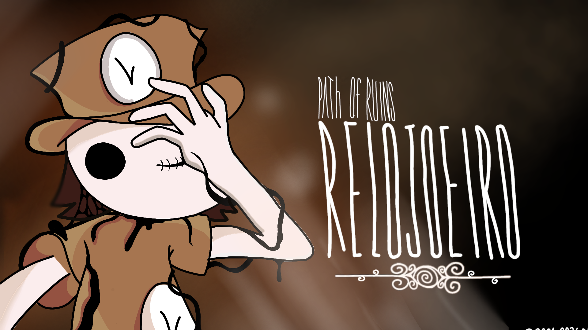

Apoiar Path of ruins

Entre traumas e ilusões voce é a pior parte da vida de alguem, apoie este jogo indie!
Path of ruins Campanha
Ajude este jogo indie!
Este projeto arrecadou 13% de R$10.300 faltam apenas 27 dias!

Sinopse
Em um mundo pós catástrofe você acorda, parece um mundo desconhecido e esquecido, mal sabe que você é a pior parte da vida de alguém, em Path of ruins veja acontecer, decida o certo, será que você será capaz de mostrar a sua personificação até o fim ou apenas um desconhecido neste vasto mundo em ruínas?
.png)
Copper
Entre a vida e o trauma Copper é a personificação, não há culpa em si, mas é tratado como culpado, será ele capaz de mostrar sua personificação ou será apenas um desconhecido neste vasto mundo em ruínas?

Relojoeiro
Sabe Que não há culpado, sabe que errou, mas não é isso que você pensa quando está á beira da loucura e vive uma tortura, o que busca é apenas alívio.
.png)
Evye
Sabe que ele não é o culpado, mas não quer que um inocente seja entregue ao abismo, além de uma forma de agradecimento.
.png)
Stii
Se entregou á loucura após ser uma tentativa falha de "alívio" após a loucura de outro.

Meu projeto e minha historia
Olá, sou Brad, criador da equipe indie de jogos SALTY, desde cedo eu sempre gostei de criar jogos mesmo com ferramentas simples como o Scratch, para mim criar jogos sempre foi arte.

Eu possuía um laptop positivo que foi meu primeiro computador da minha vida e nele conheci o Scratch (Site para ensinar lógica de programação) onde nele era possível criar seus próprios jogos e explorar jogos da comunidade, eu adorava criar jogos neste site, desde este momento fazer jogos para mim era divertido, para mim era arte, mas o laptop queimou e parou de funcionar, mas a vontade de criar continuou viva, anos depois consegui um laptop Asus, mas ainda muito limitado, com um processador Celeron muito lento e com pouca memória, onde abrir um navegador era quase um teste de paciência.

mas nele eu descobri um mod de Scratch chamado "Turbowarp" e ele era praticamente o Scratch melhorado, então eu mesmo pensei "E se eu fizer um jogo completo nesta ferramenta?" Então em 2024 eu criei o projeto "Path of ruins" mesmo assim o Turbowarp não deixava de ser limitado, o Turbowarp tinha bugs na própria ferramenta que afetava o jogo de forma que criava bugs bem difíceis de resolver, mas mesmo assim fui persistente e criei vários projeto/protótipos do jogo, e ao mesmo tempo eu iria criando eu também construí a historia do jogo e os personagens, eu planejei essa historia com todo cuidado e detalhe para uma "lore de um jogo"

O desafio Unity
mas teve um certo dia que achei que o Turbowarp era limitado demais então decidi ir para Unity, eu sei que existem ferramentas semelhantes á Unity, mas na Unity há útilidades como permitir exportar para consoles e oferecer ferramentas profissionais além de diversas funcionalidades, então percebi que para o jogo chegar onde eu sonhava, precisava da Unity, mas tem um porém toda esta quantidade de ferramentas tem um preço, a Unity é um pouco pesada, e o meu laptop por ser muito fraco a unity só para abrir poderia levar horas, no meu laptop atual a instalação demorou literalmente um mês (e alguns dias) só para instalar.
Foto do meu computador lento e do meu celular quebrado

.png)
Por que apoiar?
então no final de 2025 e no início de 2026 eu fui em busca de um novo PC, tentei, levantar fundos para conseguir comprar, mas não estava andando muito para frente, além disso eu queria um Tablet para conseguir desenhar a arte do jogo de forma melhor, pois eu curto desenhar e eu passei a vida inteira desenhando com dedo em um celular meio fraco que travava até no aplicativo de desenho, inclusive toda arte desta campanha e do artbook para doadores foi inteiramente desenhada no dedo e neste celular que trava e ainda por cima a tela está quebrada, então com as ferramentas certas poderei finalizar path of ruins com a qualidade que a história merece, agradeço imensamente cada um que puder transformar esse sonho em realidade, Brad.
E qual é a maior prova que eu realmente vou entregar este jogo?
Bem, meu amigo(a) a prova que eu irei entregar esse jogo está bem... na sua frente! para mostrar que eu sou uma pessoa que cumpre com promessa e que é honesta no que faz, assim que você faz uma doação eu irei tentar no menor tempo possivel entregar sua recompensa, teste isso agora mesmo doando no minimo R$15,00, além disso a recompensa é solicitada por meio de um formulario no Google forms, e serio se eu demorar para entrar em contato pode ser qualquer coisa até mesmo simplesmente estar ocupado ou algo assim, mas quando doar não espere que eu demore muito para entrar em contato via e-mail, além disso fique de olho nas minhas redes sociais que é @srxbrad em todas redes sociais ou @salty_team no youtube, além disso outra prova bem clara é o carinho colocado neste site, observe os detalhes nas artes que fiz em um literal celular quebrado, bem, isso não são provas suficientes? além disso eu tentei fazer uma campanha no "Catarse" que é uma de financiamento coletivo, mas tive uns probleminhas então criei meu próprio site para fazer a campanha, e isso é muito trabalhoso mesmo além disso eu tive que aprender um pouco de HTML, CSS e Javascript só para fazer este site, além disso esta campanha segue o padrão "Flexísivel" ou seja talvez eu tente fazer o jogo com o dinheiro com o dinheiro arrecadado desde que seja possivel, se não se não der para fazer o jogo ou eu mude de decisão eu devolvo o dinheiro para vocês, além disso o dinheiro pode ser solicitado de volta, mas consequetemente perderá os benéficios, além disso meu objetivo aqui é ser o mais transparente possível então qualquer duvida saltyteamsupport@gmail.com
Se interessou na historia, na arte ou na trajetória deste dev?
Então ajude este jogo indie!
Este projeto arrecadou 13% de R$10.300 faltam apenas 27 dias!
Onde o dinheiro será utilizado?
O dinheiro será utilizado para um computador minimamente descente para o desenvolvimento de jogos, incluindo claro o custo do monitor, teclado, mouse e etc. as configurações planejadas seriam
Desktop PC
Processador:Ryzen 5 5500/5600 ou equivalente
Memória: 16gb de ram ddr4 (minimo recomendado para desenvolvimento de jogos)
Placa de vídeo:rx 7600/rtx 4060 ou equivalente Armazenamento:
que representa aproximadamente 66,67% do valor
para as artes do jogo (fazer arte em um celular quebrado é realmente bem complicado)
o modelo planejado em si seria o iPad padrão com chip a16 ou iPad M1/M2
que representa aproximadamente 33,33% do valor
Qualquer duvida por favor saltyteamsupport@gmail.com

©2024-2026, Salty team.